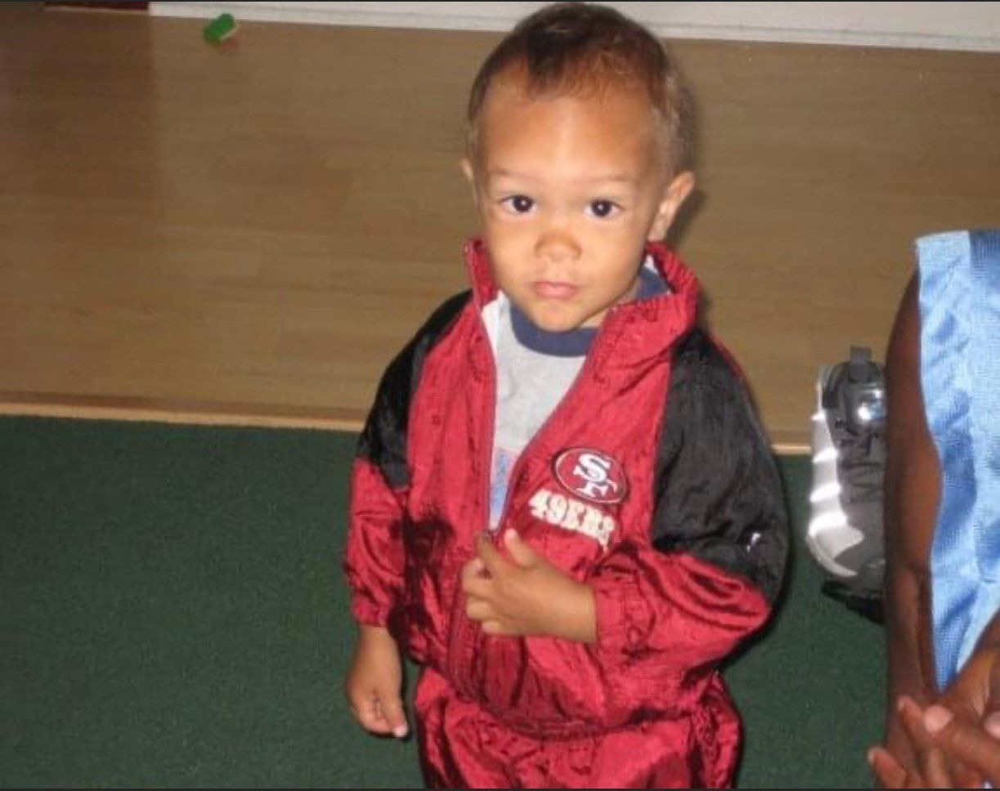
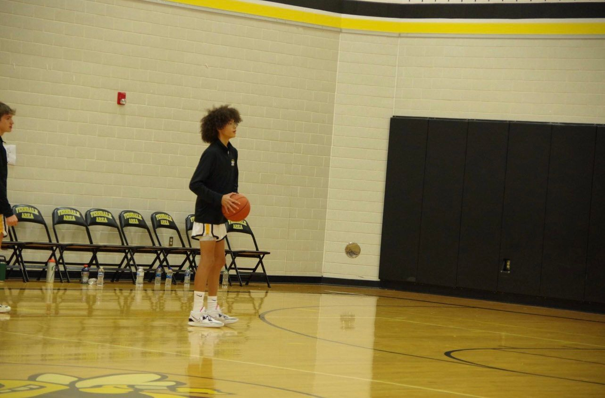
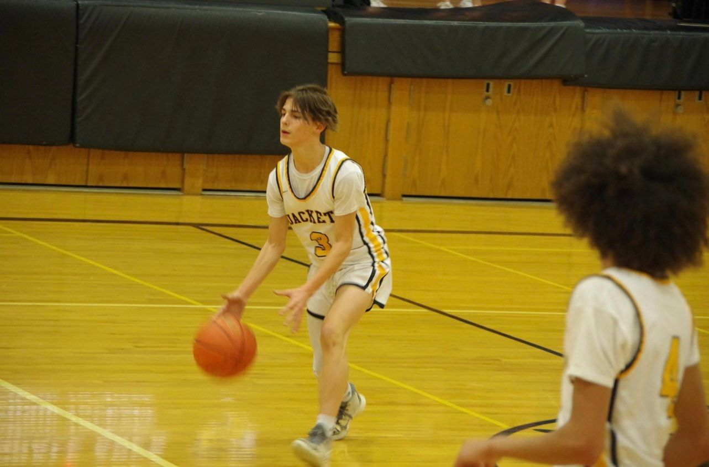

About
Home
Goals
Photos
Social
My name is Chance Washington and I am 15 years old. My birthday is January 8, 2008, and I am in the 9th grade. Some of my hobbies are playing basketball and video games. This was my fist year on the varisty basketball team as a freshman. Some of my favorite video games are Tom Clancy's Rainbow Six Siege and NBA 2K23. I enjoy spending time with my family and friends. Although school is not my favorite thing, I enjoy going to shcool sometimes because I get to spend time with my friends and make lots of memories.


